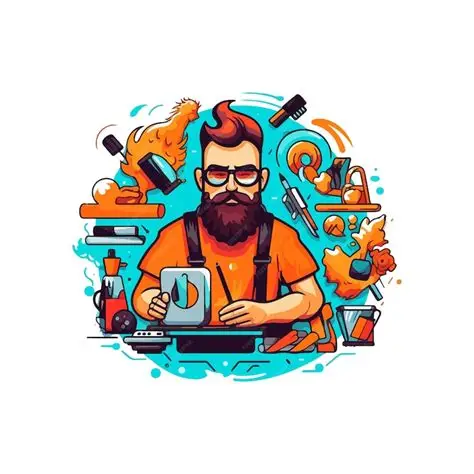
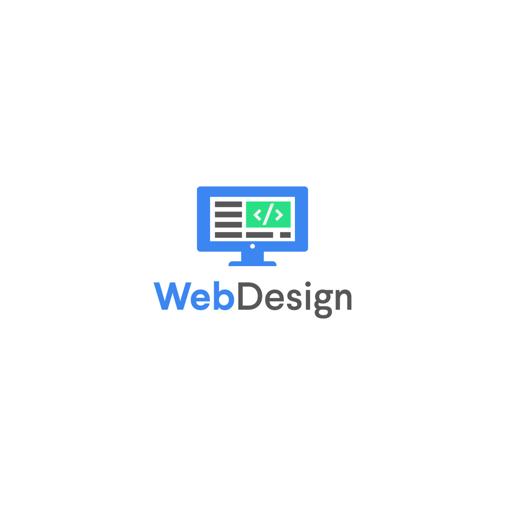

Our Services
.webp)
Video Editor
I’m a creative video editor who turns raw footage into visually compelling stories. With tools like CapCut, I craft engaging reels, shorts, and montages that keep viewers hooked. From smooth transitions to beat-perfect cuts, I focus on making every second count and every frame deliver emotion and impact.

Content Creator
I’m a content creator passionate about turning deep ideas into relatable digital content. I blend topics like self-growth, psychology, and philosophy into short-form content that educates, inspires, and connects. My aim isn’t just to create for attention — I create to spark thought and make people feel seen.

Web Development
I'm a frontend web developer focused on building clean, responsive, and user-friendly websites. Using HTML, CSS, Bootstrap, and JavaScript, I create modern interfaces that not only look great but work flawlessly across devices. I care about both design and functionality, making sure every project feels smooth, fast, and professional.
.webp)
.webp)